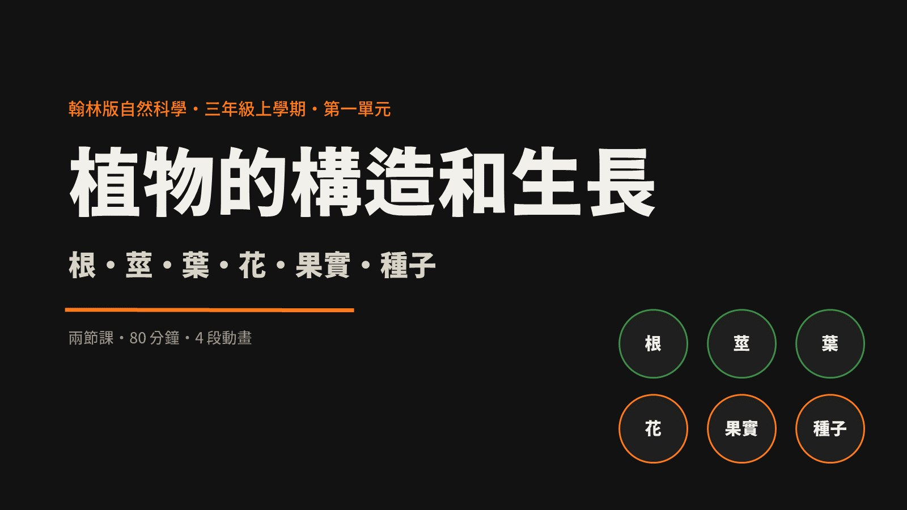

兩節課 80 分鐘。第一節認識根、莖、葉；第二節認識花、果實、種子，並用測驗收尾。
| 時間 | 教學活動 | 重點 | 教具 |
|---|---|---|---|
| 5 分 | 展示校園植物照片，問「你認得哪些部位？」請 2–3 位學生指認，教師把答案寫在黑板上。 | 喚起舊經驗 | 照片、黑板 |
| 7 分 | 簡報 p3 數出六個構造；播放 p4 動畫（12 秒），學生跟著複誦。 | 先見林再見樹 | 簡報 p3–p4 |
| 10 分 | 觀察帶根小植物；介紹鬚根與軸根；播放 p7 動畫，提問「把根剪掉會怎樣？」 | 根：吸收、固定 | 小植物、放大鏡 |
| 10 分 | 觀察芹菜莖的節；展示紅墨水染色切面；播放 p9 動畫。 | 莖：支持、運輸 | 芹菜、紅墨水 |
| 5 分 | 觀察葉片、葉脈、葉柄；說明葉製造養分需要陽光、水和空氣。 | 葉：光合作用 | 各式葉片 |
| 3 分 | 全班齊說「根吸水、莖運送、葉製造」；預告下一節的生殖器官。 | 收攏第一節 | 簡報 p11 |
| 時間 | 教學活動 | 重點 | 教具 |
|---|---|---|---|
| 3 分 | 三秒回顧：指圖卡說名稱與功能；提問「植物活下來之後，然後呢？」 | 銜接兩節課 | 圖卡 |
| 8 分 | 觀察朱槿或百合：花瓣、花萼、雄蕊、雌蕊；說明花是生殖器官。 | 花：傳粉 | 花朵、鑷子 |
| 4 分 | 播放 p14 動畫（15 秒），暫停兩次讓學生預測「現在變成什麼？」 | 花→果實→種子 | 簡報 p14 |
| 7 分 | 切開番茄觀察種子；說明果實保護種子與傳播方式（風、水、動物）。 | 果實：保護、傳播 | 番茄、小刀 |
| 7 分 | 觀察綠豆、黃豆；說明發芽需要水、空氣、適溫；情境預測。 | 種子：繁殖 | 綠豆、棉花 |
| 6 分 | 完成六大構造分類表學習單；迷思澄清（p18）；小組互查。 | 組織知識 | 學習單 |
| 5 分 | 隨堂測驗（p19／本頁測驗區）10 題；出口票；齊念帶走一句話。 | 學習遷移 | 本網頁 |
| 學生常見想法 | 教學澄清 |
|---|---|
| 根只是把植物抓住，不喝水 | 用染色水實驗與動畫，讓「吸水」變成看得見的過程；根毛增加吸收面積。 |
| 莖只是一根柱子 | 切開泡過紅墨水的芹菜，看見莖內運輸通道。 |
| 花只是好看，跟繁殖無關 | 從「花謝了之後去哪裡」追問，帶到果實與種子。 |
| 果實就是我們吃的水果 | 果實是保護種子的構造；不是所有果實都好吃。 |
| 種子種下去就會發芽 | 設計乾、泡水、冰箱三種條件，歸納發芽三條件。 |
評量方式：口頭問答（各活動中）、觀察紀錄（根莖果實種子）、分類表學習單（第二節統整）、隨堂測驗 10 題（第二節末）、出口票（下課前）。
需要協助的學生：提供圖卡配對與句型提示「＿＿可以＿＿」，允許以指認代替口述。
學有餘力的學生：比較兩種植物的根、莖、葉差異，推測功能與環境的關係。
課後延伸：綠豆發芽觀察五天、校園植物尋寶、家庭訪問「最喜歡吃植物的哪個部位」。
用左右鍵或下方縮圖換頁。第 4、7、9、14 頁是含旁白的動畫，點播放即可。

每題答完立刻看解析。10 題滿分 100 分，答對 8 題以上就是植物小達人。
搭配課程使用的公開影片，點擊會在新分頁開啟。影片版權屬原作者所有。
建議順序：根 → 莖 → 葉 → 花／果實／種子 → 統整。可作為課前預習或課後複習。
抽籤點名、倒數計時，直接投影使用。